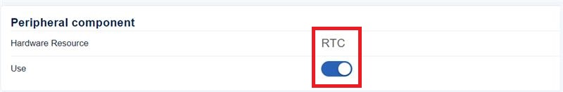
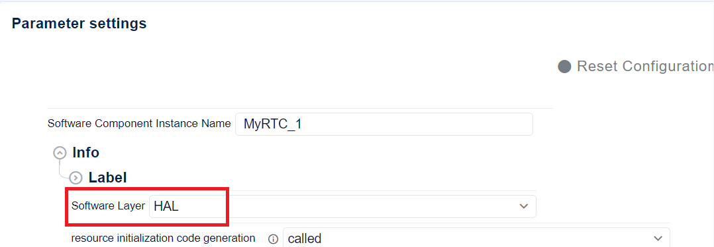
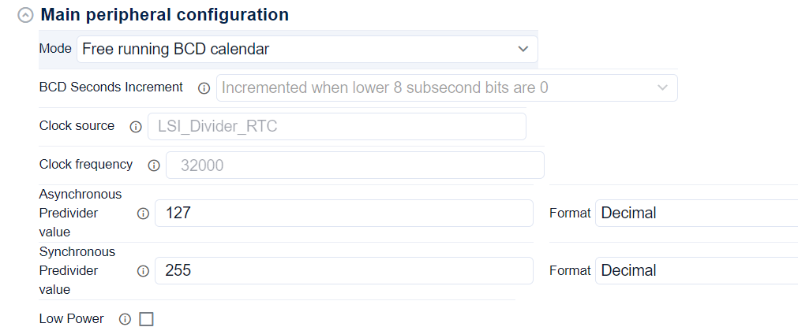
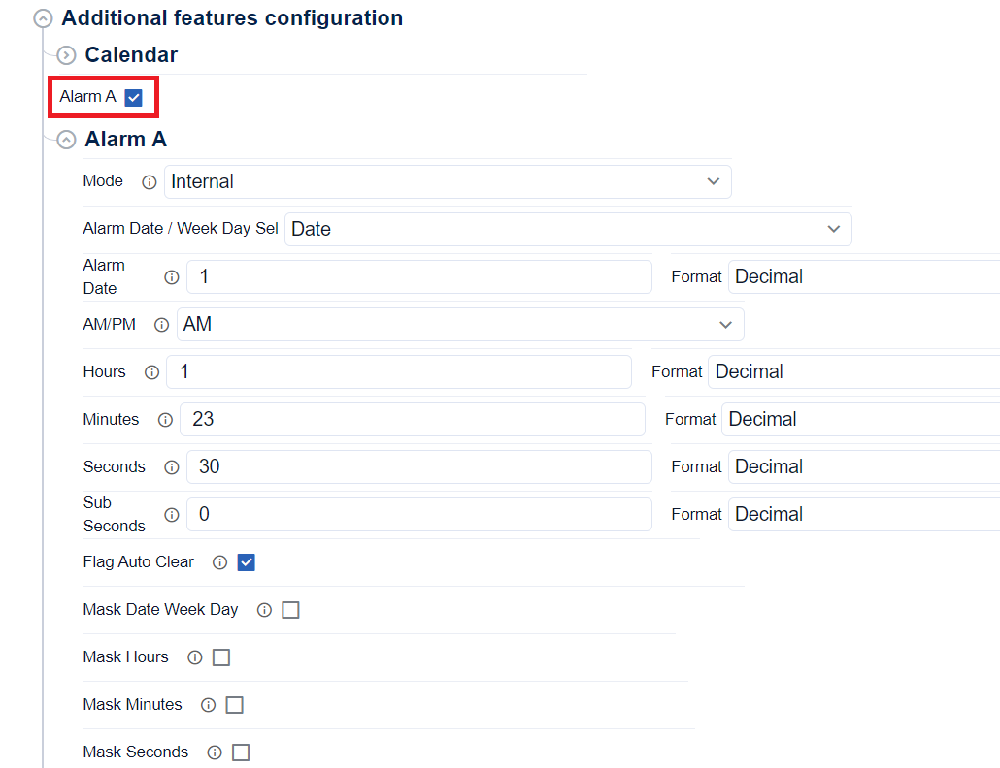
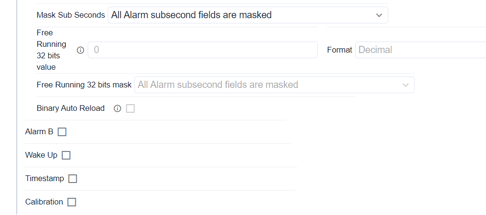
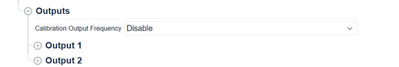
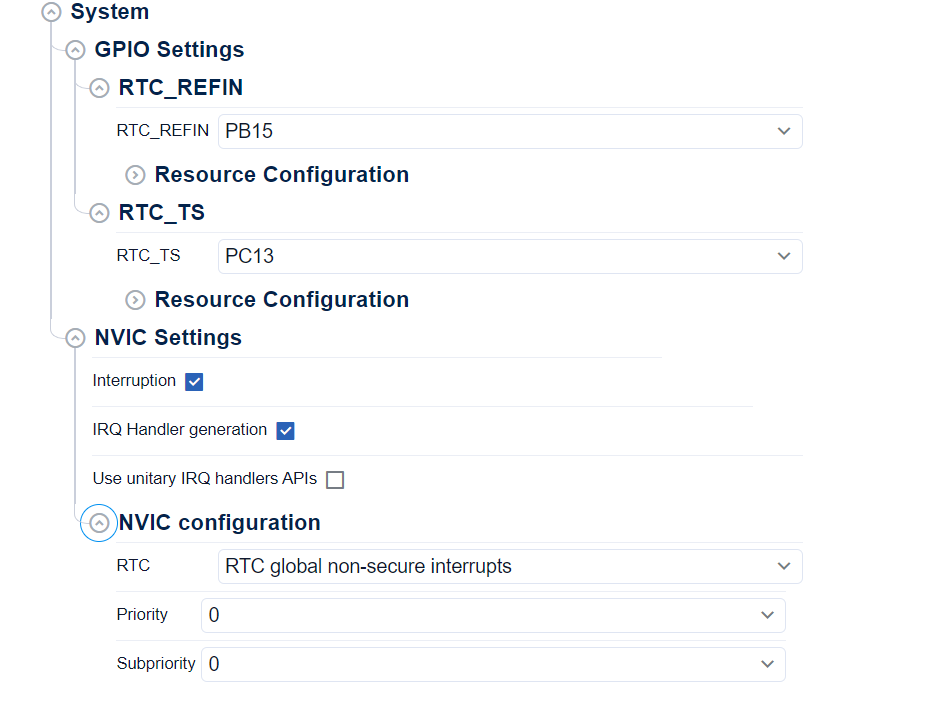

HAL RTC initialization and configuration functions migration ¶
The goal of this page is to show how to migrate the Init sequence using STM32CubeMX2:
-
Open STM32CubeMX2 RTC configuration panel
-
Configure the SW layer HAL/LL
-
Configure RTC main peripheral
-
Configure RTC additional features
-
Generate the code
Note
RTC initialization key changes
-
RTC handle is removed.
-
Init and Deinit functions are removed, you can follow the sequence below to get the same result in HAL2. Generated RTC init and de-init sequences
-
Unitairy functions are provided to configure the RTC in HAL2.
-
In HAL2 you need to call
HAL_RTC_DisableWriteProtection()&HAL_RTC_EnterInitMode()before starting the configuration and end it withHAL_RTC_EnableWriteProtection()&HAL_RTC_ExitInitMode()as highlighted in the HAL RTC Typical use cases for migration
Configuration of the software layer and resource initialisation ¶
Create a new project with the STM32CubeMX2, then start the initialisation and configuration.
Select RTC instance and the HAL layer.




Main configuration ¶
The main peripheral start with the default config and you can adjust it to your need.
-
Default configuration :


Additional features configuration ¶
-
Alarm A :




Output configuration ¶


System interruption configuration ¶
You can enable the interruption in the system section


Generated RTC init and de-init sequences ¶
The RTC initialisation and de-initialisation sequences are generated in the
mx_rtc_hal_init
function in
mx_rtc.c
file under
$PROJ_DIR$/generated/STM32Cube_CodeGen
.
Note
Related concept :
|
Topic |
HAL1 code snippet |
HAL2 code snippet |
|---|---|---|
|
RTC Init, config and Msp sequences |
static void MX_RTC_Init(void)
{
RTC_PrivilegeStateTypeDef privilegeState = {0};
RTC_TimeTypeDef sTime = {0};
RTC_DateTypeDef sDate = {0};
RTC_AlarmTypeDef sAlarm = {0};
/** Initialize RTC Only */
hrtc.Instance = RTC;
hrtc.Init.HourFormat = RTC_HOURFORMAT_24;
hrtc.Init.AsynchPrediv = 127;
hrtc.Init.SynchPrediv = 255;
hrtc.Init.OutPut = RTC_OUTPUT_DISABLE;
hrtc.Init.OutPutRemap = RTC_OUTPUT_REMAP_NONE;
hrtc.Init.OutPutPolarity = RTC_OUTPUT_POLARITY_HIGH;
hrtc.Init.OutPutType = RTC_OUTPUT_TYPE_OPENDRAIN;
hrtc.Init.OutPutPullUp = RTC_OUTPUT_PULLUP_NONE;
hrtc.Init.BinMode = RTC_BINARY_NONE;
if (HAL_RTC_Init(&hrtc) != HAL_OK)
{
Error_Handler();
}
privilegeState.rtcPrivilegeFull = RTC_PRIVILEGE_FULL_NO;
privilegeState.backupRegisterPrivZone = RTC_PRIVILEGE_BKUP_ZONE_NONE;
privilegeState.backupRegisterStartZone2 = RTC_BKP_DR0;
privilegeState.backupRegisterStartZone3 = RTC_BKP_DR0;
if (HAL_RTCEx_PrivilegeModeSet(&hrtc, &privilegeState) != HAL_OK)
{
Error_Handler();
}
/** Initialize RTC and set the Time and Date */
sTime.Hours = 0x0;
sTime.Minutes = 0x0;
sTime.Seconds = 0x0;
sTime.DayLightSaving = RTC_DAYLIGHTSAVING_NONE;
sTime.StoreOperation = RTC_STOREOPERATION_RESET;
if (HAL_RTC_SetTime(&hrtc, &sTime, RTC_FORMAT_BCD) != HAL_OK)
{
Error_Handler();
}
sDate.WeekDay = RTC_WEEKDAY_MONDAY;
sDate.Month = RTC_MONTH_JANUARY;
sDate.Date = 0x1;
sDate.Year = 0x0;
if (HAL_RTC_SetDate(&hrtc, &sDate, RTC_FORMAT_BCD) != HAL_OK)
{
Error_Handler();
}
/** Enable the Alarm A */
sAlarm.AlarmTime.Hours = 0x1;
sAlarm.AlarmTime.Minutes = 0x23;
sAlarm.AlarmTime.Seconds = 0x30;
sAlarm.AlarmTime.SubSeconds = 0x0;
sAlarm.AlarmMask = RTC_ALARMMASK_NONE;
sAlarm.AlarmSubSecondMask = RTC_ALARMSUBSECONDMASK_ALL;
sAlarm.AlarmDateWeekDaySel = RTC_ALARMDATEWEEKDAYSEL_DATE;
sAlarm.AlarmDateWeekDay = 0x1;
sAlarm.Alarm = RTC_ALARM_A;
if (HAL_RTC_SetAlarm_IT(&hrtc, &sAlarm, RTC_FORMAT_BCD) != HAL_OK)
{
Error_Handler();
}
}
void HAL_RTC_MspInit(RTC_HandleTypeDef* hrtc)
{
RCC_PeriphCLKInitTypeDef PeriphClkInit = {0};
if(hrtc->Instance==RTC)
{
/** Initializes the peripherals clock */
PeriphClkInit.PeriphClockSelection = RCC_PERIPHCLK_RTC;
PeriphClkInit.RTCClockSelection = RCC_RTCCLKSOURCE_LSI;
if (HAL_RCCEx_PeriphCLKConfig(&PeriphClkInit) != HAL_OK)
{
Error_Handler();
}
/* Peripheral clock enable */
__HAL_RCC_RTC_ENABLE();
__HAL_RCC_RTCAPB_CLK_ENABLE();
__HAL_RCC_RTCAPB_CLKAM_ENABLE();
/* RTC interrupt Init */
HAL_NVIC_SetPriority(RTC_IRQn, 0, 0);
HAL_NVIC_EnableIRQ(RTC_IRQn);
}
}
|
system_status_t mx_rtc_hal_init(void)
{
hal_rtc_config_t rtc_config;
hal_rtc_calendar_config_t calendar_config;
hal_rtc_time_t calendar_time;
hal_rtc_date_t calendar_date;
hal_rtc_alarm_t alarm_a;
hal_rtc_alarm_config_t alarm_a_config;
hal_rtc_alarm_date_time_t alarm_a_date_time;
/* Clock configuration */
HAL_RCC_ResetBackupDomain();
HAL_PWR_DisableRTCDomainWriteProtection();
HAL_RCC_RTC_EnableKernelClock();
if (HAL_RTC_DisableWriteProtection() != HAL_OK)
{
return SYSTEM_PERIPHERAL_ERROR;
}
if (HAL_RTC_EnterInitMode() != HAL_OK)
{
return SYSTEM_PERIPHERAL_ERROR;
}
rtc_config.mode = HAL_RTC_MODE_BCD;
rtc_config.asynch_prediv = 127;
rtc_config.synch_prediv = 255;
if (HAL_RTC_SetConfig(&rtc_config) != HAL_OK)
{
return SYSTEM_PERIPHERAL_ERROR;
}
calendar_config.hour_format = HAL_RTC_CALENDAR_HOUR_FORMAT_24;
calendar_config.bypass_shadow_register = HAL_RTC_CALENDAR_SHADOW_REG_KEEP;
if (HAL_RTC_CALENDAR_SetConfig(&calendar_config) != HAL_OK)
{
return SYSTEM_PERIPHERAL_ERROR;
}
calendar_date.wday = HAL_RTC_WEEKDAY_MONDAY;
calendar_date.mon = HAL_RTC_MONTH_JANUARY;
calendar_date.mday = 1;
calendar_date.year = 0;
calendar_time.am_pm = HAL_RTC_TIME_FORMAT_AM_24H;
calendar_time.hour = 0;
calendar_time.min = 0;
calendar_time.sec = 0;
if (HAL_RTC_CALENDAR_SetDateTime(&calendar_date, &calendar_time) != HAL_OK)
{
return SYSTEM_PERIPHERAL_ERROR;
}
alarm_a = HAL_RTC_ALARM_A;
alarm_a_config.auto_clear = HAL_ALARM_AUTO_CLEAR_ENABLE;
if (HAL_RTC_ALARM_SetConfig(alarm_a, &alarm_a_config) != HAL_OK)
{
return SYSTEM_PERIPHERAL_ERROR;
}
alarm_a_date_time.mday_wday_selection = HAL_RTC_ALARM_DAY_TYPE_SEL_MONTHDAY;
alarm_a_date_time.wday_mday.mday = 1;
alarm_a_date_time.time.hour = 1;
alarm_a_date_time.time.min = 23;
alarm_a_date_time.time.sec = 30;
alarm_a_date_time.time.subsec = 0;
alarm_a_date_time.mask = HAL_RTC_ALARM_MASK_NONE;
alarm_a_date_time.subsec_mask = 0;
if (HAL_RTC_ALARM_SetDateTime(alarm_a, &alarm_a_date_time) != HAL_OK)
{
return SYSTEM_PERIPHERAL_ERROR;
}
if (HAL_RTC_ExitInitMode() != HAL_OK)
{
return SYSTEM_PERIPHERAL_ERROR;
}
if (HAL_RTC_EnableWriteProtection() != HAL_OK)
{
return SYSTEM_PERIPHERAL_ERROR;
}
HAL_PWR_EnableRTCDomainWriteProtection();
/* Enable the interruption for RTC */
HAL_CORTEX_NVIC_SetPriority(RTC_IRQn, HAL_CORTEX_NVIC_PREEMP_PRIORITY_0, HAL_CORTEX_NVIC_SUB_PRIORITY_0);
HAL_CORTEX_NVIC_EnableIRQ(RTC_IRQn);
return SYSTEM_OK;
}
|
|
RTC Deinit sequence |
void HAL_RTC_MspDeInit(RTC_HandleTypeDef* hrtc)
{
if(hrtc->Instance==RTC)
{
/* Peripheral clock disable */
__HAL_RCC_RTC_DISABLE();
__HAL_RCC_RTCAPB_CLK_DISABLE();
__HAL_RCC_RTCAPB_CLKAM_DISABLE();
/* RTC interrupt DeInit */
HAL_NVIC_DisableIRQ(RTC_IRQn);
}
}
|
void mx_rtc_hal_deinit(void)
{
/* Disable the interruption for RTC */
HAL_CORTEX_NVIC_DisableIRQ(RTC_IRQn);
}
|
|
RTC IRQ handler sequence |
void RTC_IRQHandler(void)
{
HAL_RTC_AlarmIRQHandler(&hrtc);
}
|
void RTC_IRQHandler(void)
{
HAL_RTC_IRQHandler();
}
|